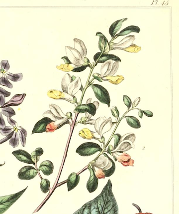

-
1. Calla Lily
Magnificent Beauty
"The calla lilies are in bloom again. Such a strange flower--suitable to any occasion. I carried them on my wedding day, and now I place them here in memory of something that has died" -Edna Ferber & George S Kaufman, The Stage Door (1936)

-
2. Lily of the Valley
Love's Good Fortune
"I have considered the lilies/They never toil, they only bloom/They never feel chilly or tired or silly/And they don't need much room" -Connie Converse, "I Have Considered the Lilies"

-

3. Milkweed
Hope in Misery
Quote about first flower
-
4. Snow Drop
Hope
"Snowdrops: Theirs is a fragile but hardy celebration in the very teeth of winter" -Louise Wilder

-
5. Sweet William
Grant Me One Smile
Quote about first flower